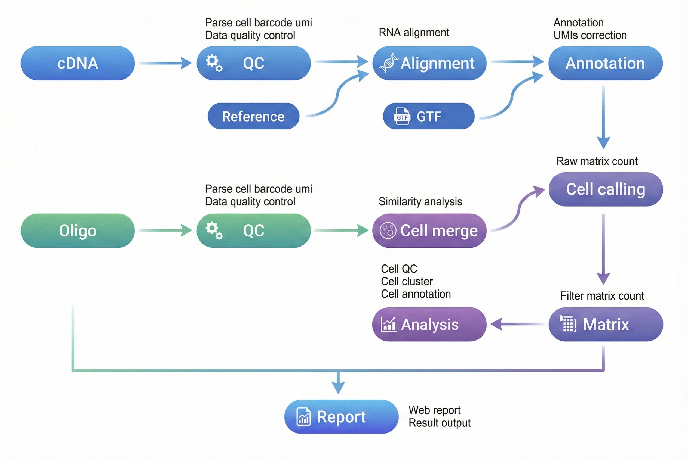

概述 ¶
本文档旨在提供一份完整的指南，详细介绍如何使用 dnbc4tools 对单细胞 RNA 测序数据进行分析。
工作流程：原始数据 → 质量控制 → 比对 → 细胞识别 → 表达矩阵 → 分析报告

使用说明：$dnbc4tools 代表可执行程序路径，需替换为您的实际安装路径。本文示例使用换行符 \ 分隔命令以提高可读性，实际分析时可写为单行。
文件准备 ¶
分析需要两种类型的 FASTQ 文件：
| 文件类型 | 说明 |
|---|---|
| cDNA 文库 | 包含 Cell Barcode、UMI 和转录组信息的测序数据。 |
| Oligo 文库 | 包含大小磁珠的 Cell Barcode 信息及小磁珠的 UMI 信息。 |
注意：请确保 FASTQ 文件质量良好，并记录文件路径以备后续分析使用。
参考数据库 ¶
参考数据库输入文件¶
| 文件类型 | 格式 | 说明 |
|---|---|---|
| 基因组文件 | FASTA | 包含特定物种的完整基因组序列（通常是主装配版本），涵盖染色体、线粒体及其他遗传信息。该文件是基因组比对和分析的基础。 |
| 注释文件 | GTF | 详细描述基因组中的基因、转录本、外显子等功能区域。此文件明确了基因的位置、类型及相关属性。 |
推荐数据来源：优先使用 Ensembl 数据库 提供的文件。Ensembl 的 GTF 文件包含可选标签，便于通过 dnbc4tools tools mkgtf 进行过滤。
GTF 文件要求：
- 必须包含
gene或transcript类型以及exon类型的注释。 - 属性中必须包含
gene_id或gene_name以及transcript_id或transcript_name。 - 不支持 GFF 文件格式。
- 基因组文件与注释文件需版本对应。
GTF 文件预处理（可选） ¶
从 ENSEMBL 和 UCSC 等网站下载的 GTF 文件通常包含多种类型的基因。根据您的研究兴趣选择特定的基因类型进行分析，可以有效减少基因注释的重叠，从而提高比对的唯一性。与多个基因非唯一比对的 reads 会被过滤。
我们提供以下三种 GTF 文件处理功能：
| 功能 | 说明 |
|---|---|
| 基因类型统计 | 统计 GTF 文件中各基因类型的数量。 |
| GTF 文件校正 | 填补缺失信息，确保 GTF 文件符合分析要求。 |
| 基因类型过滤 | 根据研究需要筛选特定基因类型。 |
基因类型统计¶
# 统计基因类型数量
$dnbc4tools tools mkgtf \
--action stats \
--ingtf genes.gtf
注意：软件会自动尝试识别 type 参数。如需手动确定，可查看 GTF 文件中的 tag。

输出示例：
Type Count
protein_coding 20006
lncRNA 17755
processed_pseudogene 10159
unprocessed_pseudogene 2605
misc_RNA 2221
snRNA 1910
miRNA 1879
TEC 1056
transcribed_unprocessed_pseudogene 950
snoRNA 943
transcribed_processed_pseudogene 503
rRNA_pseudogene 497
IG_V_pseudogene 187
transcribed_unitary_pseudogene 146
IG_V_gene 145
......
GTF 文件校正¶
当 GTF 文件内容不完整时，主分析流程可能会因无法完全注释而中断。此功能能够自动填补基因（gene）与转录本（transcript）条目中的缺失信息，确保流程顺利进行。
# 校正GTF 文件
$dnbc4tools tools mkgtf \
--action check \
--ingtf genes.gtf \
--output corrected.gtf
软件会根据 gene_id 和 gene_name 以及 transcript_id 和 transcript_name 互相填补，并提示可能存在多个基因信息的位置。
基因类型过滤¶
# 基因类型过滤
$dnbc4tools tools mkgtf \
--ingtf genes.gtf \
--output genes.filter.gtf \
--type gene_biotype
默认包含的基因类型：
protein_coding
lncRNA/lincRNA
antisense
IG_V_gene
IG_LV_gene
IG_D_gene
IG_J_gene
IG_C_gene
IG_V_pseudogene
IG_J_pseudogene
IG_C_pseudogene
TR_V_gene
TR_D_gene
TR_J_gene
TR_C_gene
也可使用 include 参数自定义需要保留的基因类型：
# 自定义基因类型过滤
$dnbc4tools tools mkgtf \
--ingtf genes.gtf \
--output genes.filter.gtf \
--type gene_biotype \
--include protein_coding,lncRNA,lincRNA,antisense,IG_V_gene,\
IG_LV_gene,IG_J_gene,IG_C_gene,IG_V_pseudogene,\
IG_J_pseudogene,IG_C_pseudogene,TR_V_gene,TR_D_gene,\
TR_J_gene,TR_C_gene
参考数据库构建¶
在执行 dnbc4tools rna run 分析前，必须先构建参考数据库。此步骤利用注释文件（GTF）和参考基因组（FASTA）创建索引，用于后续测序 reads 的比对和注释。
运行命令：
# 构建参考数据库
$dnbc4tools rna mkref \
--fasta genome.fa \
--ingtf genes.filter.gtf \
--species Homo_sapiens \
--threads 20
输出目录：
成功运行后，将在指定位置创建参考数据库目录，包含以下文件结构：
/database/scRNA/Homo_sapiens
├── fasta
│ ├── genome.fa
│ └── genome.fa.fai
├── genes
│ └── genes.gtf
├── ref.json
└── star
├── chrLength.txt
├── chrNameLength.txt
├── chrName.txt
├── chrStart.txt
├── exonGeTrInfo.tab
├── exonInfo.tab
├── geneInfo.tab
├── Genome
├── genomeParameters.txt
├── mtgene.list
├── SA
├── SAindex
├── sjdbInfo.txt
├── sjdbList.fromGTF.out.tab
├── sjdbList.out.tab
└── transcriptInfo.tab
ref.json 示例：
其中 ref.json 文件记录了数据库的主要信息。
{
"chrmt": "chrM",
"genome": "fasta/genome.fa",
"genomeDir": "star",
"gtf": "genes/genes.gtf",
"input_fasta_files": [
"genome.fa"
],
"input_gtf_files": [
"genes.filter.gtf"
],
"mtgenes": "star/mtgene.list",
"species": "Homo_sapiens",
"version": "3.1"
}
注意：构建参考数据库可能需要较长时间，具体取决于基因组大小和计算性能。软件主分析流程兼容旧版本数据库。
运行日志示例：
运行时将打印如下信息：
2026-04-03 16:29:02 Creating new reference folder at /database/scRNA/Homo_sapiens
...done
2026-04-03 16:29:02 Writing genome FASTA file into reference folder...
...done
2026-04-03 16:29:57 Indexing genome FASTA file...
...done
2026-04-03 16:30:09 Writing genes GTF file into reference folder...
...done
2026-04-03 16:33:20 Generating STAR genome index...
...done
2026-04-03 17:13:34 Writing Reference JSON file into reference folder...
...done
2026-04-03 17:13:37 RNA reference building finished.
主流程分析 ¶
主流程分析包括单样本分析和多样本批处理两种使用方式：
- 单样本分析：直接运行
dnbc4tools rna run，适用于单个样本的完整分析。 - 多样本批处理：先通过
dnbc4tools rna multi生成每个样本的运行脚本，适用于多个样本的批量任务准备。
单样本分析¶
RNA 主分析流程处理单个样本的 cDNA 和 Oligo 文库测序数据。该流程的核心步骤包括：
- 数据处理：执行质量控制、比对和功能区域注释。
- 细胞识别：合并磁珠，识别有效细胞。
- 矩阵生成：生成原始及过滤后的基因表达矩阵。
- 高级分析：对过滤后矩阵进行细胞筛选、降维、聚类和注释。
- 报告生成：输出 HTML 格式的分析报告及其他结果文件。
支持两种输入方式：
方式1：目录方式（推荐）
$dnbc4tools rna run \
--name sample \
--fastqs /data \
--genomeDir /opt/database/Homo_sapiens \
--threads 30
目录结构示例：
/data/
├── cDNA/
│ ├── sample_cDNA_R1.fastq.gz
│ └── sample_cDNA_R2.fastq.gz
└── oligo/
├── sample_oligo_1_R1.fastq.gz
├── sample_oligo_1_R2.fastq.gz
├── sample_oligo_2_R1.fastq.gz
└── sample_oligo_2_R2.fastq.gz
目录要求：
--fastqs指向的目录必须包含cDNA/和oligo/两个子目录。- 每个子目录内放置对应文库的 R1/R2 配对 FASTQ 文件。
- 自动识别依赖文件名中的 R1/R2 标识。建议使用
_R1/_R2或_R1_/_R2_命名。 - 不同样本或不同文库的数据不要混放到同一输入目录中。
方式2：单独参数方式
$dnbc4tools rna run \
--name sample \
--cDNAfastq1 /data/cDNA/sample_cDNA_R1.fastq.gz \
--cDNAfastq2 /data/cDNA/sample_cDNA_R2.fastq.gz \
--oligofastq1 /data/oligo/sample_oligo_1_R1.fastq.gz,/data/oligo/sample_oligo_2_R1.fastq.gz \
--oligofastq2 /data/oligo/sample_oligo_1_R2.fastq.gz,/data/oligo/sample_oligo_2_R2.fastq.gz \
--genomeDir /opt/database/Homo_sapiens \
--threads 30
在对试剂版本和暗反应自动检测后，软件开始运行分析，以下是一个示例：
──────────────────────────── Parsed FASTQ Inputs — 2025-11-12 15:00:24 ─────────────────────────────
┌─────────────┬────────────────────────────────────────────────────────────────────────────────────┐
│ Type │ Path │
├─────────────┼────────────────────────────────────────────────────────────────────────────────────┤
│ cDNA Read 1 │ /data/cDNA/sample_cDNA_R1.fastq.gz │
│ cDNA Read 2 │ /data/cDNA/sample_cDNA_R2.fastq.gz │
│ oligo Read 1 │ /data/oligo/sample_oligo_1_R1.fastq.gz,/data/oligo/sample_oligo_2_R1.fastq.gz │
│ oligo Read 2 │ /data/oligo/sample_oligo_1_R2.fastq.gz,/data/oligo/sample_oligo_2_R2.fastq.gz │
└─────────────┴────────────────────────────────────────────────────────────────────────────────────┘
────────────────────────────────────────────────────────────────────────────────────────────────────
──────────────────────────── Chemistry Detection — 2025-11-12 15:00:31 ─────────────────────────────
┌───────────────────────────────────────────────┬──────────────────────────────────────────────────┐
│ Type │ Result │
├───────────────────────────────────────────────┼──────────────────────────────────────────────────┤
│ oligo Read 1 │ darkreaction │
│ oligo Read 2 │ darkreaction │
└───────────────────────────────────────────────┴──────────────────────────────────────────────────┘
────────────────────────────────────────────────────────────────────────────────────────────────────
──────────────────────────── Chemistry Detection — 2025-11-12 15:00:31 ─────────────────────────────
┌─────────────────────────────────────────────┬────────────────────────────────────────────────────┐
│ Type │ Result │
├─────────────────────────────────────────────┼────────────────────────────────────────────────────┤
│ cDNA Read 1 │ darkreaction │
└─────────────────────────────────────────────┴────────────────────────────────────────────────────┘
────────────────────────────────────────────────────────────────────────────────────────────────────
2025-11-12 15:00:31 Starting oligo library filtering...
...done
2025-11-12 15:05:53 Starting cDNA library filtering...
...done
2025-11-12 15:07:49 Performing read alignment and UMI counting...
...done
2025-11-12 15:15:25 Calculating bead similarity and merging beads within droplets...
...done
2025-11-12 15:15:41 Generating raw gene expression matrix...
...done
2025-11-12 15:17:24 Generating cell-filtered gene expression matrix...
...done
2025-11-12 15:17:43 Calculating sequencing saturation metrics...
...done
2025-11-12 15:18:08 Generating position-sorted BAM file...
...done
2025-11-12 15:24:46 Performing dimensionality reduction and clustering analysis...
...done
2025-11-12 15:27:21 Generating analysis report and summary statistics...
...done
2025-11-12 15:27:40 Analysis Finished. Elapsed Time: 0:27:16
当出现 Analysis Finished 消息时，表示分析已成功完成。
多样本批处理（可选）¶
为简化多样本分析流程，可使用配置文件批量生成针对每个样本的 shell 脚本。
$dnbc4tools rna multi \
--list sample.tsv \
--genomeDir /opt/database/Homo_sapiens \
--threads 30
其中 sample.tsv 文件使用制表符 (\t) 分隔，包含三列：
| 列 | 内容 |
|---|---|
| 1 | 样本名称 |
| 2 | cDNA 文库测序数据 |
| 3 | Oligo 文库测序数据 |
注意：多个 FASTQ 文件以逗号分隔，R1 和 R2 文件以分号分隔。
sample1 /data/cDNA1_R1.fq.gz;/data/cDNA1_R2.fq.gz /data/oligo1_R1.fq.gz,/data/oligo4_R1.fq.gz;/data/oligo1_R2.fq.gz,/data/oligo4_R2.fq.gz
sample2 /data/cDNA2_R1.fq.gz;/data/cDNA2_R2.fq.gz /data/oligo2_R1.fq.gz;/data/oligo2_R2.fq.gz
sample3 /data/cDNA3_R1.fq.gz;/data/cDNA3_R2.fq.gz /data/oligo3_R1.fq.gz;/data/oligo3_R2.fq.gz
运行完成后，将为每个样本生成一个 shell 脚本：
sample1.sh
sample2.sh
sample3.sh
sample1.sh 文件内容示例：
$cat sample1.sh
/opt/software/dnbc4tools3.1/dnbc4tools rna run --name sample1 --cDNAfastq1 /data/cDNA1_R1.fq.gz --cDNAfastq2 /data/cDNA1_R2.fq.gz --oligofastq1 /data/oligo1_R1.fq.gz,/data/oligo4_R1.fq.gz --oligofastq2 /data/oligo1_R2.fq.gz,/data/oligo4_R2.fq.gz --genomeDir /database/scRNA/Mus_musculus/mm10 --threads 30
随后可执行这些脚本进行主流程分析。
结果解析 ¶
分析完成后，将生成 outs（结果输出）和 logs（日志）目录。outs 目录结构如下：
.
├── analysis/
│ ├── cluster.csv
│ ├── marker.csv
│ └── QC_Cluster.h5ad
├── anno_decon_sorted.bam
├── anno_decon_sorted.bam.bai
├── filter_feature.h5ad
├── filter_matrix/
│ ├── barcodes.tsv.gz
│ ├── features.tsv.gz
│ └── matrix.mtx.gz
├── metrics_summary.xls
├── raw_matrix/
│ ├── barcodes.tsv.gz
│ ├── features.tsv.gz
│ └── matrix.mtx.gz
├── *_scRNA_report.html
└── singlecell.csv
相关文档¶
常见问题¶
本节将根据常见使用问题持续补充。当前版本请优先参考运行日志、参数说明和输出文件说明进行排查。
反馈与支持
本文档持续维护更新。若发现内容错误或需要补充信息，请通过 GitHub Issues 反馈。
文档版本： 3.1 | 最后更新： 2026年4月